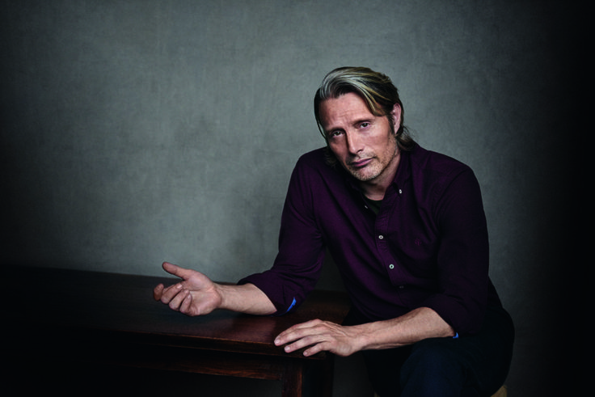
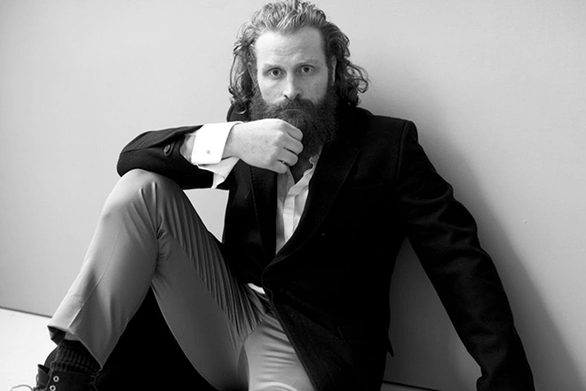

Андрей Воронцов дата публикации 16 марта 2020
Потоковый сервис Netflix приступил к съемкам продолжения своего самого популярного сериала - "Ведьмак". По заявлению компании, на которое ссылается издание Comic Book, второй сезон шоу выйдет на потоковом сервисе в 2021 году. Более точная дата будет объявлена позже.
Детали о сюжете второго сезона, несмотря на многочисленные слухи и догадки, неизвестны. На момент написания заметки подтверждено, что второй сезон, как и первый, будет состоять из восьми эпизодов, которые выйдут одновременно.
Читать дальшеАндрей Воронцов дата публикации 2 марта 2020
Потоковый сервис Netflix обрел исполнителя роли Весемра во втором сезоне сериала "Ведьмак" в лице актера Кима Боднии, знакомого поклонникам многосерийного телепроекта "Мост". Однако, как утверждает издание Geek Tyrant, изначально компания хотела привлечь к работе более известного широкой зрительской аудитории артиста.
Предложение сыграть Весемира получили Мадс Миккельсен и Майкл Китон, но оба они отказались участвовать в сериале без объяснения причин. Примечательно также, что заинтересованность в этой роли высказывал другой известный голливудский актер Марк Хэмилл, но создателей шоу его кандидатура не привлекла.
Читать дальшеАндрей Воронцов дата публикации 18 февраля 2020
Звезда сериала "Игра престолов" Кристофер Хивджу примет участие в другом фэнтезийном шоу. Как сообщает издание Comic Book, речь идет о втором сезоне сериала "Ведьмак", в котором актеру предложено сыграть персонажа по имени Нивеллен, также известного по прозвищам Выродок и Клыкастый.
Нивеллен описывается в литературном первоисточнике как человекообразный полумедведь-полулев. Он впервые упоминается в рассказе "Крупица истины", когда Геральт забредает на территорию его удаленного поместья. В прошлом он был человеком, членом разбойничьей шайки. После одного из налетов на храм, на него было наложено проклятье, в результате чего он и превратился в монстра. Считается, что прототипом этого персонажа является герой знаменитой сказки "Красавица и чудовище".
Читать дальше